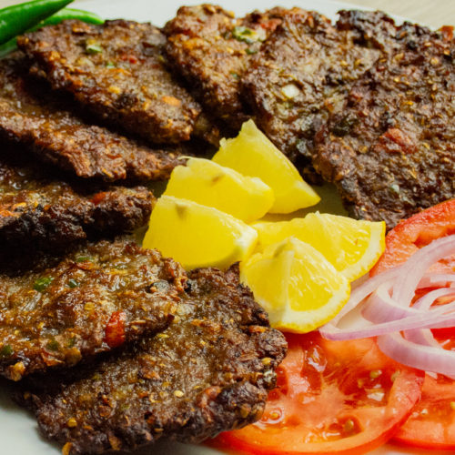

Chapli Kebab

Description
Chapli kebab is a minced meat patty widely popular in Pakistan.
Mixed with a blend of spices, ground beef is flattened into patties
and shallow-fried until the exterior is charred and flavorful.
Serve in a bun with pickled red onions
or with a side of pita bread.
Ingredients
- Cooking spray
- 1 large egg, lightly beaten
- 1 pound ground beef
- 1 red onion, finely chopped
- 1 tomato, finely chopped
- 1/4 cup finely chopped cilantro
- 1/4 cup finely chopped mint
- 2 teaspoons ginger-garlic paste
- 2 teaspoons coriander seeds, crushed
- 1 teaspoon salt
- 3/4 teaspoon ground cumin
- 3/4 teaspoon ground cayenne pepper
- 2 tomato, sliced into rounds
- 1/4 cup vegetable oil for frying, or more as needed
Steps
- Coat a small skillet with cooking spray and place over medium-high heat.
Cook and stir beaten egg in the hot skillet until scrambled and set, 3 to 5 minutes.
- Combine scrambled egg, beef, onion, chopped tomato, cilantro, mint, ginger-garlic paste, coriander seeds, salt, cumin, and cayenne pepper in a large bowl;
mix by hand until well combined. Shape mixture into patties. Press a tomato slice into the center of each patty.
- Heat oil in a deep skillet to 375 degrees F (190 degrees C). Cook patties in hot oil in batches until charred, 4 to 6 minutes per side.